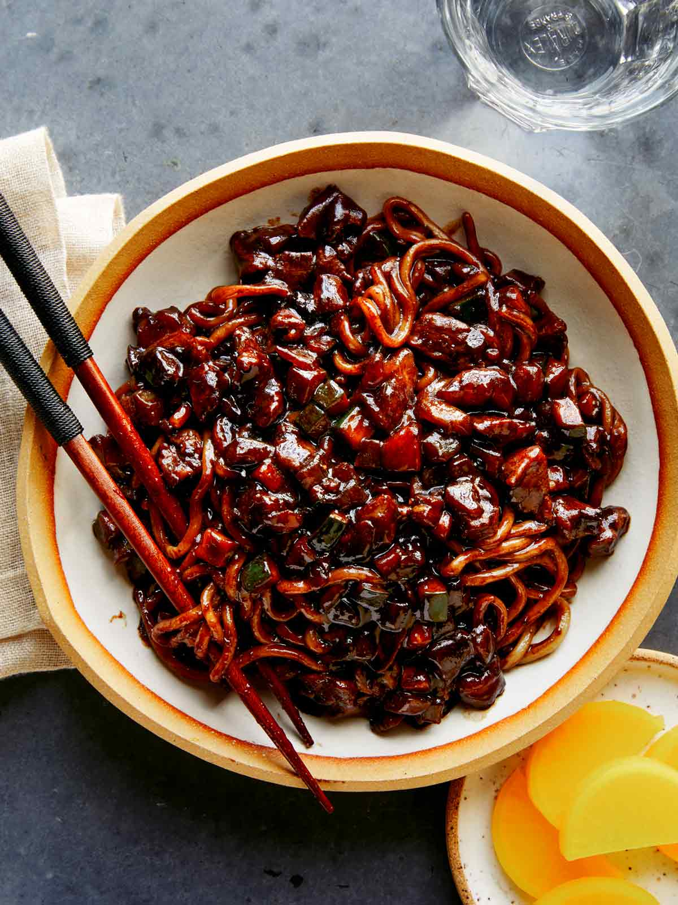

Jjajangmyeon

Description
Korean Chinese noodle dish topped with a thick sauce made of chunjang, diced pork, and vegetables
Ingredients
- 4 servings Noodles
- ½ Onion chopped
- ½ Zucchini chopped
- 1 Potato chopped
- 1 carrot chopped
- ⅓ Daikon chopped
- 1.5 lb Pork Belly sliced
- 3 tbsp Oil
- ¼ cup Black Bean Paste
- 1 ½ cup Chicken Stock or Water
- 1 tbsp Corn Starch
- Cucumber garnish
Steps
- Turn the heat up to medium-high, and once the pan is hot, add pork belly to a large pan. Saute the pork belly for 3-4 minutes or until slightly golden brown.
- Next, add onion and saute for 1-2 minutes or until fragrant.
- Add potato, zucchini, carrot, and daikon and saute together for another 2-3 minutes.
- Push the vegetables to the side and form a circle in the middle. Add in oil and black bean paste and saute for black bean for 1 minute, then saute everything together.
- Pour in water or chicken stock and let it simmer for 2-3 minutes.
- Mix 1/4 cup of cold water and 1 tbsp cornstarch together, slowly pour it into the pan, and cook for another 1-2 minutes.
- Serve with your favorite noodle with freshly sliced cucumbers.